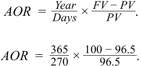
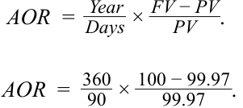
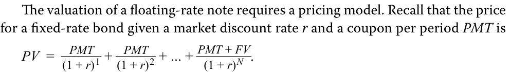
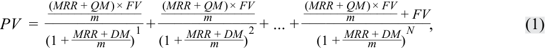
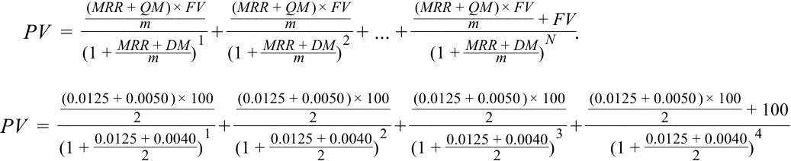
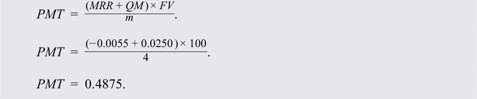
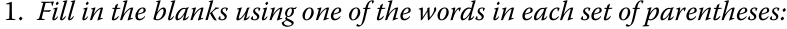
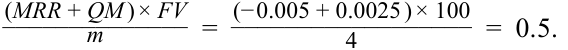
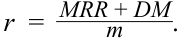

Learning Module 8 Yield and Yield Spread Measures for Floating-Rate Instruments - Part 1: Introduction
Volume 6: Fixed Income
Learning Module 8 Yield and Yield Spread Measures for Floating-Rate Instruments
Part 1/2: Introduction (PDF Pages 197–206)
Tập 6: Thu nhập Cố định (Fixed Income)
Học phần 8: Các Thước đo Lợi suất và Chênh lệch Lợi suất đối với Công cụ Lãi suất Thả nổi (Yield and Yield Spread Measures for Floating-Rate Instruments)
Phần 1/2: Giới thiệu (Trang PDF 197–206)
L E A R N I N G M O D U L E
H Ọ C P H Ầ N
8
8
Yield and Yield Spread Measures for Floating-Rate Instruments
Các Thước đo Lợi suất và Chênh lệch Lợi suất đối với Công cụ Lãi suất Thả nổi (Yield and Yield Spread Measures for Floating-Rate Instruments)
LEARNING OUTCOMES
MỤC TIÊU HỌC TẬP (LEARNING OUTCOMES)
| Mastery | The candidate should be able to: |
|---|---|
| calculate and interpret yield spread measures for floating-rate instruments |
|
| calculate and interpret yield measures for money market instruments |
| Mức độ thành thạo | Ứng viên cần có khả năng: |
|---|---|
| tính toán và diễn giải các thước đo chênh lệch lợi suất (yield spread measures) đối với các công cụ lãi suất thả nổi (floating-rate instruments) | |
| tính toán và diễn giải các thước đo lợi suất (yield measures) đối với các công cụ thị trường tiền tệ (money market instruments) |
INTRODUCTION
GIỚI THIỆU (INTRODUCTION)
1
1
Prior lessons covered pricing, yields, and spreads for bonds with fixed coupon rates and times-to-maturity of one year or longer. The next two lessons broaden the discussion to include instruments with variable rather than fixed coupons, known as floating-rate instruments, and those with original maturities of one year or less, known as money market instruments. Both types of instrument are important for investors and issuers. Floating-rate instruments, by adjusting cash flows to changes in interest rates, bear less price risk than fixed-rate instruments and are used to hedge certain exposures and to match asset and liability cash flows. Most loans are floating-rate instruments. Money market instruments are a significant source of short-term financing for many types of issuers. A short time-to-maturity means that investors can reinvest and issuers can refinance relatively quickly, which reduces interest rate risk.
Các bài học trước đã đề cập đến việc định giá, lợi suất và chênh lệch lợi suất (spreads) đối với các trái phiếu có lãi suất coupon cố định (fixed coupon rates) và thời gian đáo hạn từ một năm trở lên. Hai bài học tiếp theo sẽ mở rộng thảo luận sang các công cụ có lãi suất coupon biến đổi thay vì cố định, được gọi là công cụ lãi suất thả nổi (floating-rate instruments), và những công cụ có kỳ hạn gốc từ một năm trở xuống, được gọi là công cụ thị trường tiền tệ (money market instruments). Cả hai loại công cụ này đều quan trọng đối với các nhà đầu tư và tổ chức phát hành. Các công cụ lãi suất thả nổi, bằng cách điều chỉnh dòng tiền theo sự thay đổi của lãi suất, chịu ít rủi ro giá (price risk) hơn so với các công cụ lãi suất cố định và được sử dụng để phòng vệ (hedge) một số rủi ro nhất định cũng như để khớp dòng tiền giữa tài sản và nợ phải trả (asset and liability cash flows). Hầu hết các khoản vay đều là công cụ lãi suất thả nổi. Các công cụ thị trường tiền tệ là một nguồn tài trợ ngắn hạn quan trọng đối với nhiều loại tổ chức phát hành. Thời gian đáo hạn ngắn có nghĩa là các nhà đầu tư có thể tái đầu tư và các tổ chức phát hành có thể tái cấp vốn tương đối nhanh chóng, điều này làm giảm rủi ro lãi suất (interest rate risk).
Most of the examples and exhibits used throughout the reading can be downloaded as a Microsoft Excel workbook. Each worksheet in the workbook is labeled with the corresponding example or exhibit number in the text.
Hầu hết các ví dụ và bảng biểu được sử dụng xuyên suốt bài đọc có thể được tải xuống dưới dạng sổ làm việc Microsoft Excel. Mỗi trang tính trong sổ làm việc được gắn nhãn với số ví dụ hoặc số bảng biểu tương ứng trong văn bản.
LEARNING MODULE OVERVIEW
TỔNG QUAN HỌC PHẦN (LEARNING MODULE OVERVIEW)
- A floating-rate instrument is a debt instrument with interest determined by an observed market reference rate (MRR) plus a quoted margin. Interest payments are reset, capturing any change in the MRR, on predetermined dates.
- Công cụ lãi suất thả nổi (floating-rate instrument) là một công cụ nợ có tiền lãi được xác định bởi lãi suất tham chiếu thị trường (market reference rate – MRR) quan sát được cộng với một biên độ yết giá (quoted margin). Các khoản thanh toán lãi được đặt lại (reset), phản ánh bất kỳ thay đổi nào trong MRR, vào các ngày đã được xác định trước.
-
The quoted margin is a specified spread over or under the reference rate. The required margin, also known as the discount margin, is the spread required by investors.
-
The required margin reflects “bottom-up” or issuer- and security-specific risks and is analogous to a yield spread for a fixed-rate bond discussed in prior lessons. If a floater trades at par, the quoted and required margins are equal.
-
Money market instruments have original maturities of one year or less and are quoted using different conventions from those of longer-dated securities. Quotes are made on a discount rate or add-on rate basis.
-
Money market discount rates are interest income divided by the face value (maturity value). They understate the investor’s rate of return if the purchase price is below the face value and vice versa.
-
Conventional money market measures can be converted to enhance comparability to longer-term securities.
-
Biên độ yết giá (quoted margin) là một mức chênh lệch xác định cao hơn hoặc thấp hơn lãi suất tham chiếu. Biên độ yêu cầu (required margin), còn được gọi là biên độ chiết khấu (discount margin), là mức chênh lệch được các nhà đầu tư yêu cầu.
-
Biên độ yêu cầu phản ánh các rủi ro “từ dưới lên” (“bottom-up”) hay rủi ro đặc thù của tổ chức phát hành và chứng khoán (issuer- and security-specific risks) và tương tự như chênh lệch lợi suất (yield spread) của một trái phiếu lãi suất cố định đã được thảo luận trong các bài học trước. Nếu một trái phiếu lãi suất thả nổi (floater) được giao dịch ngang mệnh giá (at par), biên độ yết giá và biên độ yêu cầu sẽ bằng nhau.
-
Các công cụ thị trường tiền tệ (money market instruments) có kỳ hạn gốc từ một năm trở xuống và được yết giá bằng các quy ước khác với các quy ước của những chứng khoán có kỳ hạn dài hơn. Báo giá được thực hiện trên cơ sở lãi suất chiết khấu (discount rate) hoặc lãi suất cộng thêm (add-on rate).
-
Lãi suất chiết khấu thị trường tiền tệ (money market discount rates) là thu nhập tiền lãi chia cho mệnh giá (giá trị đáo hạn – face value / maturity value). Chúng đánh giá thấp (understate) tỷ suất sinh lợi của nhà đầu tư nếu giá mua thấp hơn mệnh giá và ngược lại.
-
Các thước đo thông thường của thị trường tiền tệ có thể được chuyển đổi để tăng cường khả năng so sánh với các chứng khoán dài hạn hơn.
LEARNING MODULE SELF-ASSESSMENT
TỰ ĐÁNH GIÁ HỌC PHẦN (LEARNING MODULE SELF-ASSESSMENT)
These initial questions are intended to help you gauge your current level of understanding of the learning module.
Các câu hỏi ban đầu này nhằm giúp bạn tự đánh giá mức độ hiểu biết hiện tại của mình về học phần này.
- The following information relates to three floating-rate notes (FRNs) issued at par value that have the three-month MRR as their reference rate.
- Thông tin sau đây liên quan đến ba trái phiếu lãi suất thả nổi (floating-rate notes – FRNs) được phát hành ngang mệnh giá (at par value) và có MRR 3 tháng làm lãi suất tham chiếu.
| Floating-Rate Note | Quoted Margin | Discount Margin |
|---|---|---|
| FRN 1 | 140 bps | 128 bps |
| FRN 2 | 145 bps | 145 bps |
| FRN 3 | 150 bps | 165 bps |
| Trái phiếu lãi suất thả nổi (Floating-Rate Note) | Biên độ yết giá (Quoted Margin) | Biên độ chiết khấu (Discount Margin) |
|---|---|---|
| FRN 1 | 140 bps | 128 bps |
| FRN 2 | 145 bps | 145 bps |
| FRN 3 | 150 bps | 165 bps |
Based on the information provided, identify which FRN will be priced at a discount on the next reset date.
-
A. FRN 1
-
B. FRN 2
Dựa trên thông tin được cung cấp, hãy xác định FRN nào sẽ được định giá chiết khấu (at a discount) vào ngày đặt lại lãi suất (reset date) tiếp theo.
C. FRN 3
-
A. FRN 1
-
B. FRN 2
-
C. FRN 3
Solution:
Lời giải:
C is correct. FRN 3 will be priced at a discount on the next reset date since its quoted margin of 150 bps is less than its discount margin of 165 bps. The discount amount is the present value of the deficient future interest payments of 15 bps per quarter (150 bps – 165 bps).
C là đáp án đúng. FRN 3 sẽ được định giá chiết khấu vào ngày đặt lại lãi suất tiếp theo vì biên độ yết giá của nó là 150 bps thấp hơn biên độ chiết khấu là 165 bps. Khoản chiết khấu là giá trị hiện tại của các khoản thanh toán tiền lãi bị thiếu hụt trong tương lai ở mức 15 bps mỗi quý (150 bps – 165 bps).
B is incorrect because FRN 2 will be priced at par value on the next reset date since its quoted margin is equal to its discount margin.
B không đúng vì FRN 2 sẽ được định giá ngang mệnh giá vào ngày đặt lại lãi suất tiếp theo do biên độ yết giá của nó bằng với biên độ chiết khấu.
A is incorrect because FRN 1 will be priced at a premium because its quoted margin of 140 bps is greater than its discount margin of 128 bps. The premium amount is the present value of the extra, or “excess,” interest payments of 12 bps each quarter (140 bps – 128 bps).
A không đúng vì FRN 1 sẽ được định giá có phần trội (at a premium) bởi vì biên độ yết giá 140 bps của nó lớn hơn biên độ chiết khấu 128 bps. Khoản phần trội là giá trị hiện tại của các khoản thanh toán tiền lãi bổ sung hay “vượt trội” (“excess”) ở mức 12 bps mỗi quý (140 bps – 128 bps).
- On a reset date, if the required margin falls to 30 bps because of a change in the issuer’s credit risk, an FRN that has a quoted margin of 50 bps will be priced at a:
-
A. discount.
-
B. premium.
-
C. discount or premium, depending on its duration.
-
Solution:
- Vào ngày đặt lại lãi suất (reset date), nếu biên độ yêu cầu (required margin) giảm xuống 30 bps do sự thay đổi trong rủi ro tín dụng của tổ chức phát hành, một FRN có biên độ yết giá (quoted margin) là 50 bps sẽ được định giá ở mức:
-
A. chiết khấu (discount).
-
B. phần trội (premium).
-
C. chiết khấu hoặc phần trội, tùy thuộc vào thời lượng (duration) của nó.
-
Lời giải:
B is correct. The required margin reflects the credit risk of the issuer. It declined, meaning that the credit risk of the issuer improved; in other words, the market demands a lower spread. The required margin is below the quoted margin, so this floater will be priced at a premium.
B là đáp án đúng. Biên độ yêu cầu phản ánh rủi ro tín dụng của tổ chức phát hành. Nó đã giảm xuống, có nghĩa là rủi ro tín dụng của tổ chức phát hành đã được cải thiện; nói cách khác, thị trường đòi hỏi một mức chênh lệch thấp hơn. Biên độ yêu cầu thấp hơn biên độ yết giá, vì vậy trái phiếu lãi suất thả nổi này sẽ được định giá ở mức phần trội (at a premium).
- A 365-day year bank certificate of deposit has an initial principal amount of USD96.5 million and a redemption amount due at maturity of USD100 million. The number of days between settlement and maturity is 270. The addon rate of the certificate of deposit is closest to:
-
A. 3.63%.
-
B. 4.82%.
C. 4.90%.
- Một chứng chỉ tiền gửi ngân hàng (bank certificate of deposit) tính theo năm 365 ngày có số tiền gốc ban đầu là 96,5 triệu USD và số tiền hoàn trả đến hạn khi đáo hạn là 100 triệu USD. Số ngày giữa ngày thanh toán (settlement) và ngày đáo hạn (maturity) là 270 ngày. Lãi suất cộng thêm (add-on rate) của chứng chỉ tiền gửi này gần nhất với mức:
-
A. 3,63%.
-
B. 4,82%.
-
C. 4,90%.
Solution:
Lời giải:
C is correct. The add-on rate is closest to 4.90%. The add-on rate is calculated as
C là đáp án đúng. Lãi suất cộng thêm gần nhất với mức 4,90%. Lãi suất cộng thêm (AOR) được tính như sau:

AOR = 0.04903 = 4.90 % .
$AOR = 0.04903 = 4.90\%$.
- A 90-day commercial paper instrument is quoted at a discount rate of 0.120%, assuming a 360-day year. Given that the price of the instrument is paid 100 per face value, its bond equivalent yield rate is closest to:
-
A. 0.107%.
-
B. 0.120%.
-
C. 0.135%.
-
Solution:
- Một công cụ thương phiếu (commercial paper) kỳ hạn 90 ngày được yết ở mức lãi suất chiết khấu (discount rate) là 0,120%, giả định một năm có 360 ngày. Cho biết giá của công cụ được thanh toán trên mỗi 100 đơn vị mệnh giá, lợi suất tương đương trái phiếu (bond equivalent yield) của nó gần nhất với mức:
-
A. 0,107%.
-
B. 0,120%.
-
C. 0,135%.
-
Lời giải:
B is correct. The bond equivalent yield is closest to 0.120%. First, we need to calculate the price of the instrument. Then, we can calculate the AOR or its bond equivalent yield.
B là đáp án đúng. Lợi suất tương đương trái phiếu gần nhất với mức 0,120%. Trước tiên, chúng ta cần tính giá của công cụ. Sau đó, chúng ta có thể tính AOR hoặc lợi suất tương đương trái phiếu của nó.
The price ( PV ) of the commercial paper instrument is
Giá ($PV$) của công cụ thương phiếu là:
Days PV_ = FV × (1 − Year×DR) . PV_ = 100 × (1 − 36090× 0.0012 ) . PV = 99.97.
PV is used to calculate the add-on rate or bond equivalent yield:
$PV$ được sử dụng để tính lãi suất cộng thêm (add-on rate) hoặc lợi suất tương đương trái phiếu (bond equivalent yield):

AOR = 0.0012 = 0.12 % .
$AOR = 0.0012 = 0.12\%$.
- A fixed-income analyst is evaluating two instruments:
-
A 180-day Thai bank certificate of deposit (CD) quoted at a discount rate of 5.95%, assuming a 360-day year and a bond equivalent yield of 6.218%
-
A 180-day Thai corporate commercial paper (CP) quoted as an add-on rate of 6.10%, assuming a 365-day year and a bond equivalent yield of 6.100%.
- Một chuyên viên phân tích thu nhập cố định đang đánh giá hai công cụ:
-
Một chứng chỉ tiền gửi ngân hàng (certificate of deposit – CD) Thái Lan kỳ hạn 180 ngày được yết ở mức lãi suất chiết khấu 5,95%, giả định một năm có 360 ngày và lợi suất tương đương trái phiếu (bond equivalent yield) là 6,218%
-
Một thương phiếu doanh nghiệp (commercial paper – CP) Thái Lan kỳ hạn 180 ngày được yết dưới dạng lãi suất cộng thêm 6,10%, giả định một năm có 365 ngày và lợi suất tương đương trái phiếu là 6,100%.
Assuming the six-month Thai T-bill is quoted at 4.36%, which instrument most likely has higher credit risk?
Giả sử tín phiếu Kho bạc (T-bill) Thái Lan kỳ hạn 6 tháng được yết ở mức 4,36%, công cụ nào nhiều khả năng nhất có rủi ro tín dụng cao hơn?
Solution:
Lời giải:
The Thai CD. The spreads over the Thai T-bill for the CD and CP are 186 bps and 174 bps, respectively. We use the bond equivalent yield measure to compare the return of each instrument and derive the spread of each one over the Thai T-bill.
Chứng chỉ tiền gửi (CD) của ngân hàng Thái Lan. Mức chênh lệch (spread) so với tín phiếu Kho bạc Thái Lan đối với CD và CP lần lượt là 186 bps và 174 bps. Chúng ta sử dụng thước đo lợi suất tương đương trái phiếu (bond equivalent yield) để so sánh tỷ suất sinh lợi của từng công cụ và suy ra mức chênh lệch của từng công cụ so với tín phiếu Kho bạc Thái Lan.
The Thai bank CD has a spread of
CD ngân hàng Thái Lan có mức chênh lệch là:
6.218% – 4.36% = 186 bps.
6,218% – 4,36% = 186 bps.
And the Thai corporate CP has a spread of
Và CP doanh nghiệp Thái Lan có mức chênh lệch là:
- 6.10% – 4.36% = 174 bps.
- 6,10% – 4,36% = 174 bps.
Therefore, the Thai bank CD has a higher credit risk than the Thai corporate CP.
Do đó, CD ngân hàng Thái Lan có rủi ro tín dụng cao hơn so với CP doanh nghiệp Thái Lan.
2
2
YIELD AND YIELD SPREAD MEASURES FOR FLOATING-RATE NOTES
CÁC THƯỚC ĐO LỢI SUẤT VÀ CHÊNH LỆCH LỢI SUẤT ĐỐI VỚI TRÁI PHIẾU LÃI SUẤT THẢ NỔI (YIELD AND YIELD SPREAD MEASURES FOR FLOATING-RATE NOTES)
calculate and interpret yield spread measures for floating-rate instruments
tính toán và diễn giải các thước đo chênh lệch lợi suất đối với các công cụ lãi suất thả nổi
Yield and Yield Spread Measures for Floating-Rate Instruments
Các Thước đo Lợi suất và Chênh lệch Lợi suất đối với Công cụ Lãi suất Thả nổi (Yield and Yield Spread Measures for Floating-Rate Instruments)
Floating-rate instruments, including floating-rate notes (FRNs or floaters) and most loans, are different from fixed-rate bonds. Rather than fixed coupon payments, they vary from period to period depending on the current level of a reference interest rate. The intent is to both automatically adjust a borrower’s base rate to market conditions and offer an investor or lender less price risk when market interest rates fluctuate. In
Các công cụ lãi suất thả nổi (floating-rate instruments), bao gồm trái phiếu lãi suất thả nổi (floating-rate notes – FRNs hoặc floaters) và hầu hết các khoản vay, khác với trái phiếu lãi suất cố định. Thay vì các khoản thanh toán coupon cố định, chúng thay đổi từ kỳ này sang kỳ khác tùy thuộc vào mức lãi suất tham chiếu hiện hành. Mục đích là vừa tự động điều chỉnh lãi suất cơ sở của bên đi vay theo các điều kiện thị trường, vừa mang lại cho nhà đầu tư hoặc bên cho vay ít rủi ro giá hơn khi lãi suất thị trường biến động. Về
principle, a floater has a stable price even in a period of volatile interest rates because cash flows adjust with changes in interest rates. With a traditional fixed-income security, constant future cash flows result in price changes in response to interest rate volatility.
nguyên tắc, một trái phiếu lãi suất thả nổi có mức giá ổn định ngay cả trong giai đoạn lãi suất biến động mạnh bởi vì các dòng tiền tự điều chỉnh theo những thay đổi của lãi suất. Với một chứng khoán thu nhập cố định truyền thống, các dòng tiền tương lai không đổi dẫn đến sự thay đổi giá để phản ứng lại sự biến động của lãi suất.
Exhibit 1 shows the term sheet for four-year FRNs issued by Antelas AG, the German emerging technology company focused on manufacturing process design, introduced in an earlier lesson.
Bảng 1 hiển thị bản điều khoản tóm tắt (term sheet) cho các FRN kỳ hạn 4 năm được phát hành bởi Antelas AG, công ty công nghệ mới nổi của Đức tập trung vào thiết kế quy trình sản xuất, đã được giới thiệu trong một bài học trước.
Exhibit 1: Antelas AG Floating-Rate Note Issue
Bảng 1: Đợt phát hành Trái phiếu Lãi suất Thả nổi của Antelas AG (Exhibit 1: Antelas AG Floating-Rate Note Issue)
| Antela | s AG Four-Year Floating-Rate Notes (the “Notes”) Prospectus Summary |
|---|---|
| Issuer: | Antelas AG |
| Settlement Date: | [T + 5 Business Days] |
| Maturity Date: | [Four Years from Settlement Date] |
| Principal Amount: | EUR250 million |
| Interest: | MRR plus 250 bps p.a. |
| Interest Payment: | MRR is reset quarterly and interest is paid quarterly Commencing three months from [Settlement Date] to be paid quarterly with final payment on [Maturity Date] |
| Seniority: | i The Notes are secured and unsubordinated obligations of Antelas AG and will rank pari passu with all other secured and unsubordinated indebtedness |
| Business Days: | Frankfurt |
| Antelas AG | Trái phiếu Lãi suất Thả nổi Kỳ hạn 4 năm (“Trái phiếu”) Tóm tắt Bản cáo bạch (Prospectus Summary) |
|---|---|
| Tổ chức phát hành (Issuer): | Antelas AG |
| Ngày thanh toán (Settlement Date): | [T + 5 Ngày làm việc] |
| Ngày đáo hạn (Maturity Date): | [Bốn năm kể từ Ngày thanh toán] |
| Số tiền gốc (Principal Amount): | 250 triệu EUR |
| Tiền lãi (Interest): | MRR cộng 250 bps mỗi năm (p.a.) |
| Thanh toán tiền lãi (Interest Payment): | MRR được đặt lại hàng quý và tiền lãi được trả hàng quý Bắt đầu từ ba tháng kể từ [Ngày thanh toán], được trả hàng quý với khoản thanh toán cuối cùng vào [Ngày đáo hạn] |
| Thứ tự ưu tiên (Seniority): | Trái phiếu là nghĩa vụ nợ có bảo đảm và không thứ cấp (secured and unsubordinated) của Antelas AG và sẽ xếp ngang hàng (pari passu) với tất cả các khoản nợ có bảo đảm và không thứ cấp khác |
| Ngày làm việc (Business Days): | Frankfurt |
Notice how the interest is stated “MRR plus 250 bps p.a.” The market reference rate (MRR) on an FRN or loan usually is a short-term money market rate. Typically, the reference rate is determined at the beginning of the period, and the interest payment is made at the end of the period. This payment structure is called “in arrears.” The most common day-count conventions for calculating accrued interest on floaters are actual/360 and actual/365. For the Antelas FRN, the MRR is reset quarterly and interest is paid quarterly.
Hãy chú ý cách tiền lãi được ghi là “MRR cộng 250 bps mỗi năm (p.a.)”. Lãi suất tham chiếu thị trường (market reference rate – MRR) trên một FRN hoặc khoản vay thường là một lãi suất thị trường tiền tệ ngắn hạn. Thông thường, lãi suất tham chiếu được xác định vào đầu kỳ, và khoản thanh toán tiền lãi được thực hiện vào cuối kỳ. Cấu trúc thanh toán này được gọi là trả sau (“in arrears”). Các quy ước đếm ngày phổ biến nhất để tính lãi tích lũy (accrued interest) trên các trái phiếu lãi suất thả nổi là thực tế/360 (actual/360) và thực tế/365 (actual/365). Đối với FRN của Antelas, MRR được đặt lại hàng quý và tiền lãi được trả hàng quý.
For most FRNs and loans, a specified spread is added to or subtracted from the market reference rate. For the Antelas FRN, the spread over the MRR is 250 bps, and this is known as the quoted margin on the FRN. The role of the quoted margin is to compensate the investor for the difference in the credit risk of the issuer and that implied by the reference rate. Firms with very low credit risk may be able to obtain a negative quoted margin.
Đối với hầu hết các FRN và khoản vay, một mức chênh lệch xác định được cộng vào hoặc trừ đi khỏi lãi suất tham chiếu thị trường. Đối với FRN của Antelas, mức chênh lệch trên MRR là 250 bps, và đây được gọi là biên độ yết giá (quoted margin) trên FRN. Vai trò của biên độ yết giá là bù đắp cho nhà đầu tư phần chênh lệch giữa rủi ro tín dụng của tổ chức phát hành và rủi ro tín dụng hàm ý trong lãi suất tham chiếu. Các doanh nghiệp có rủi ro tín dụng rất thấp có thể đạt được mức biên độ yết giá âm.
The required margin is the yield spread over or under the reference rate such that the FRN is priced at par value on a rate reset date. It is determined by the market. Suppose that a floater is issued at par value and pays MRR plus 0.50%. The quoted margin is 50 bps. If there is no change in the credit risk of the issuer, the required margin remains at 50 bps. On each quarterly reset date, the floater will be priced at par value. Between coupon dates, its flat price will be at a premium or discount to par value if MRR goes, respectively, down or up. However, if the required margin continues to be the same as the quoted margin, the flat price is “pulled to par” as the next reset date nears. At the reset date, any change in MRR is included in the interest payment for the next period.
Biên độ yêu cầu (required margin) là mức chênh lệch lợi suất cao hơn hoặc thấp hơn lãi suất tham chiếu sao cho FRN được định giá ngang mệnh giá (at par value) vào ngày đặt lại lãi suất (rate reset date). Nó được quyết định bởi thị trường. Giả sử một trái phiếu lãi suất thả nổi được phát hành ngang mệnh giá và trả lãi MRR cộng 0,50%. Biên độ yết giá là 50 bps. Nếu không có sự thay đổi nào trong rủi ro tín dụng của tổ chức phát hành, biên độ yêu cầu vẫn giữ ở mức 50 bps. Vào mỗi ngày đặt lại lãi suất hàng quý, trái phiếu lãi suất thả nổi sẽ được định giá ngang mệnh giá. Giữa các ngày trả coupon, giá tịnh (flat price) của nó sẽ ở mức phần trội (premium) hoặc chiết khấu (discount) so với mệnh giá nếu MRR tương ứng giảm xuống hoặc tăng lên. Tuy nhiên, nếu biên độ yêu cầu tiếp tục bằng với biên độ yết giá, giá tịnh sẽ được “kéo về mệnh giá” (“pulled to par”) khi ngày đặt lại lãi suất tiếp theo đến gần. Vào ngày đặt lại lãi suất, bất kỳ thay đổi nào trong MRR đều được tính vào khoản thanh toán tiền lãi cho kỳ tiếp theo.
Changes in the required margin usually come from changes in the issuer’s credit risk. Changes in liquidity or tax status can also affect the required margin. Note that these are the same factors that affect the yield spread for fixed-rate bonds. Suppose that on a reset date, the required margin increases to 75 bps because of a downgrade in the issuer’s credit rating. If the quoted margin is 50 bps, the issuer now pays its
Những thay đổi trong biên độ yêu cầu thường xuất phát từ những thay đổi trong rủi ro tín dụng của tổ chức phát hành. Những thay đổi về tính thanh khoản hoặc tình trạng thuế cũng có thể ảnh hưởng đến biên độ yêu cầu. Lưu ý rằng đây cũng chính là những yếu tố ảnh hưởng đến chênh lệch lợi suất (yield spread) đối với trái phiếu lãi suất cố định. Giả sử vào một ngày đặt lại lãi suất, biên độ yêu cầu tăng lên 75 bps do việc hạ bậc xếp hạng tín nhiệm của tổ chức phát hành. Nếu biên độ yết giá là 50 bps, tổ chức phát hành hiện đang trả cho các
investors a “deficient” interest payment. This FRN will be priced at a discount below par value. The amount of the discount is the present value of the deficient future cash flows. That annuity is 25 bps per period for the remaining life of the bond. It is the difference between the required and quoted margins. If the required margin instead fell to 40 bps, perhaps from a decrease in the issuer’s credit risk, the FRN would be priced at a premium. The amount of the premium is the present value of the 10 bp annuity for the “excess” interest payment each period.
nhà đầu tư của mình một khoản thanh toán tiền lãi “thiếu hụt” (“deficient”). FRN này sẽ được định giá chiết khấu dưới mệnh giá. Giá trị của khoản chiết khấu chính là giá trị hiện tại của các dòng tiền tương lai bị thiếu hụt đó. Chuỗi niên kim (annuity) đó là 25 bps mỗi kỳ trong suốt thời gian còn lại của trái phiếu. Đó là phần chênh lệch giữa biên độ yêu cầu và biên độ yết giá. Ngược lại, nếu biên độ yêu cầu giảm xuống 40 bps, có thể do sự sụt giảm rủi ro tín dụng của tổ chức phát hành, thì FRN sẽ được định giá ở mức phần trội (at a premium). Giá trị của khoản phần trội là giá trị hiện tại của chuỗi niên kim 10 bp từ khoản thanh toán tiền lãi “vượt trội” (“excess”) mỗi kỳ.
Fixed-rate and floating-rate bonds are essentially the same with respect to changes in credit risk. With fixed-rate bonds, the premium or discount arises from a difference in the fixed coupon rate and the required yield-to-maturity. With floating-rate bonds, the premium or discount arises from a difference in the fixed quoted margin and the required margin. However, fixed-rate and floating-rate bonds are very different with respect to changes in benchmark interest rates.
Trái phiếu lãi suất cố định và trái phiếu lãi suất thả nổi về cơ bản là giống nhau xét trên khía cạnh thay đổi rủi ro tín dụng. Với trái phiếu lãi suất cố định, phần trội hoặc chiết khấu phát sinh từ sự chênh lệch giữa lãi suất coupon cố định và lợi suất đáo hạn yêu cầu (required yield-to-maturity). Với trái phiếu lãi suất thả nổi, phần trội hoặc chiết khấu phát sinh từ sự chênh lệch giữa biên độ yết giá cố định và biên độ yêu cầu. Tuy nhiên, trái phiếu lãi suất cố định và trái phiếu lãi suất thả nổi lại rất khác nhau xét trên khía cạnh thay đổi lãi suất chuẩn (benchmark interest rates).

For an FRN, PMT is a function of the MRR and the quoted margin and r is a function of the MRR and the discount margin. We can use this intuition to derive Equation 1, a simplified FRN pricing model.
Việc định giá một trái phiếu lãi suất thả nổi đòi hỏi một mô hình định giá. Hãy nhớ lại rằng giá của một trái phiếu lãi suất cố định với lãi suất chiết khấu thị trường $r$ và khoản coupon mỗi kỳ $PMT$ là:
Đối với một FRN, $PMT$ là một hàm của MRR và biên độ yết giá (quoted margin), còn $r$ là một hàm của MRR và biên độ chiết khấu (discount margin). Chúng ta có thể sử dụng trực giác này để suy ra Phương trình 1, một mô hình định giá FRN giản lược.

where
trong đó:
-
PV = present value, or the price of the floating-rate note
-
MRR = the market reference rate, stated as an annual percentage rate (it is sometimes known generically as Index)
-
QM = the quoted margin, stated as an annual percentage rate
-
FV = the future value paid at maturity, or the par value of the bond
-
m = the periodicity of the floating-rate note, the number of payment periods per year
-
DM = the discount margin = required margin stated as an annual percentage rate
-
N = the number of evenly spaced periods to maturity
-
$PV$ = giá trị hiện tại (present value), hay giá của trái phiếu lãi suất thả nổi
-
$MRR$ = lãi suất tham chiếu thị trường (market reference rate), được biểu thị dưới dạng lãi suất phần trăm năm (đôi khi được gọi chung là Chỉ số – Index)
-
$QM$ = biên độ yết giá (quoted margin), được biểu thị dưới dạng lãi suất phần trăm năm
-
$FV$ = giá trị tương lai (future value) được trả khi đáo hạn, hay mệnh giá (par value) của trái phiếu
-
$m$ = định kỳ (periodicity) của trái phiếu lãi suất thả nổi, tức số kỳ thanh toán mỗi năm
-
$DM$ = biên độ chiết khấu (discount margin) = biên độ yêu cầu (required margin) được biểu thị dưới dạng lãi suất phần trăm năm
-
$N$ = số kỳ cách đều nhau cho đến khi đáo hạn
Notice that in Equation 1, because we are using annual rates for MRR , QM , and DM , we must divide by m periods in the year.
Lưu ý rằng trong Phương trình 1, bởi vì chúng ta đang sử dụng lãi suất hàng năm cho $MRR$, $QM$, và $DM$, chúng ta phải chia cho $m$ kỳ trong năm.
This is a simplified model for several reasons. First, PV is as of a rate reset date when there are N evenly spaced periods to maturity. There is no accrued interest, so the flat price is the full price. Second, the model assumes a 30/360 day-count convention, to make sure the periodicity, m , is an integer. However, in practice, most floaters use actual/360 day counts. Third, and most important, the same MRR is used for all cash flows. More complex FRN pricing models use projected future rates in the numerators and spot rates in the denominators. Therefore, the calculation for DM depends on the simplifying assumptions in the pricing model.
Đây là một mô hình giản lược vì một số lý do. Thứ nhất, $PV$ được tính tại một ngày đặt lại lãi suất (rate reset date) khi có $N$ kỳ cách đều nhau cho đến khi đáo hạn. Không có lãi tích lũy (accrued interest), vì vậy giá tịnh (flat price) cũng chính là giá toàn phần (full price). Thứ hai, mô hình giả định quy ước đếm ngày 30/360, nhằm đảm bảo rằng định kỳ $m$ là một số nguyên. Tuy nhiên, trên thực tế, hầu hết các trái phiếu lãi suất thả nổi sử dụng quy ước đếm ngày thực tế/360 (actual/360). Thứ ba, và quan trọng nhất, cùng một mức $MRR$ được sử dụng cho tất cả các dòng tiền. Các mô hình định giá FRN phức tạp hơn sử dụng lãi suất dự phóng trong tương lai ở tử số và lãi suất giao ngay (spot rates) ở mẫu số. Do đó, phép tính cho $DM$ phụ thuộc vào các giả định giản lược trong mô hình định giá.
Suppose that we are pricing a two-year, semi-annual FRN that pays MRR plus 0.50%. Assume MRR is 1.25% and the yield spread required by investors is 40 bps. For Equation 1, we have the following inputs:
Giả sử chúng ta đang định giá một FRN trả lãi nửa năm một lần, kỳ hạn 2 năm, trả lãi bằng MRR cộng 0,50%. Giả sử MRR là 1,25% và mức chênh lệch lợi suất được các nhà đầu tư yêu cầu là 40 bps. Đối với Phương trình 1, chúng ta có các thông số đầu vào sau:
MRR = 0.0125,
$MRR = 0.0125$,
QM = 0.0050, FV = 100, m = 2,
$QM = 0.0050$, $FV = 100$, $m = 2$,
DM = 0.0040, and
$DM = 0.0040$, và
N = 4.
$N = 4$.
Using Equation 1 for N = 4, the FRN is priced at 100.196 per 100 of par value. This floater is priced at a premium above par value because the quoted margin is greater than the discount margin.
Sử dụng Phương trình 1 với $N = 4$, FRN được định giá ở mức 100,196 trên mỗi 100 đơn vị mệnh giá. Trái phiếu lãi suất thả nổi này được định giá ở mức phần trội (at a premium) cao hơn mệnh giá bởi vì biên độ yết giá lớn hơn biên độ chiết khấu.

PV = 100.196
$PV = 100.196$
If we have the market price of an FRN, we can also use Equation 1 to estimate the discount margin. Suppose that a two-year FRN pays MRR plus 0.75% on a semiannual basis. Currently, MRR is 1.10% and the price of the floater is 95.50 per 100 of par value, a discount to par, because of worsening credit risk. For Equation 1, we have the following inputs:
Nếu chúng ta có giá thị trường của một FRN, chúng ta cũng có thể sử dụng Phương trình 1 để ước tính biên độ chiết khấu (discount margin). Giả sử một FRN kỳ hạn 2 năm trả lãi MRR cộng 0,75% trên cơ sở nửa năm một lần. Hiện tại, MRR là 1,10% và giá của trái phiếu lãi suất thả nổi này là 95,50 trên mỗi 100 đơn vị mệnh giá, tức chiết khấu so với mệnh giá, do rủi ro tín dụng xấu đi. Đối với Phương trình 1, chúng ta có các thông số đầu vào sau:
PV = 95.50,
$PV = 95.50$,
MRR = 0.0110,
$MRR = 0.0110$,
QM = 0.0075,
$QM = 0.0075$,
FV = 100,
$FV = 100$,
m = 2, and
$m = 2$, và
N = 4.
$N = 4$.
Using the Solver add-in for Microsoft Excel, we find DM = 3.12%, or 312 bps, by setting the price (sum of present values of cash flows) equal to 95.50 as the objective and DM as the change variable. Please see the candidate learning ecosystem online for a spreadsheet demonstrating the calculation in the downloadable Excel workbook.
Sử dụng công cụ bổ trợ Solver cho Microsoft Excel, chúng ta tìm được $DM = 3.12\%$, hay 312 bps, bằng cách đặt mức giá (tổng giá trị hiện tại của các dòng tiền) bằng 95,50 làm mục tiêu (objective) và $DM$ làm biến thay đổi (change variable). Vui lòng xem hệ sinh thái học tập dành cho ứng viên trực tuyến để biết bảng tính minh họa phép tính trong sổ làm việc Excel có thể tải xuống.
If this FRN was issued at par value, investors required at that time a spread of only 75 bps over MRR. Now, after the credit downgrade, investors require an estimated discount margin of 312 bps. The floater trades at a discount because the quoted margin remains fixed at 75 bps, so is “deficient” by 237 bps (312-75) per period The discount margin is an estimate because it is based on a simplified FRN pricing model.
Nếu FRN này được phát hành ngang mệnh giá, các nhà đầu tư vào thời điểm đó chỉ yêu cầu mức chênh lệch 75 bps trên MRR. Giờ đây, sau khi bị hạ bậc tín nhiệm, các nhà đầu tư yêu cầu một biên độ chiết khấu ước tính là 312 bps. Trái phiếu lãi suất thả nổi giao dịch ở mức chiết khấu bởi vì biên độ yết giá vẫn giữ cố định ở mức 75 bps, nên bị “thiếu hụt” 237 bps (312 – 75) mỗi kỳ. Biên độ chiết khấu chỉ là một con số ước tính bởi vì nó dựa trên một mô hình định giá FRN giản lược.
The FRN pricing model in Equation 1 similarly applies to adjustable-rate loans made by banks and other fixed-income instruments based on MRR. Because a significant portion of bank funding comes from short-term deposits and other floating-rate
Mô hình định giá FRN trong Phương trình 1 cũng áp dụng tương tự cho các khoản vay có lãi suất điều chỉnh (adjustable-rate loans) do các ngân hàng cấp và các công cụ thu nhập cố định khác dựa trên MRR. Bởi vì một phần đáng kể nguồn vốn của ngân hàng đến từ tiền gửi ngắn hạn và các nguồn lãi suất thả nổi
sources, banks prefer to make floating-rate loans to businesses and individuals, as opposed to fixed-rate loans, to help maintain a match between assets and liabilities on the balance sheet.
khác, các ngân hàng ưu tiên cấp các khoản vay lãi suất thả nổi cho các doanh nghiệp và cá nhân, thay vì các khoản vay lãi suất cố định, để giúp duy trì sự cân xứng giữa tài sản và nợ phải trả trên bảng cân đối kế toán.
EXAMPLE 1
VÍ DỤ 1
Calculating the Discount Margin for a Floating-Rate Note
Tính toán Biên độ Chiết khấu cho một Trái phiếu Lãi suất Thả nổi (Calculating the Discount Margin for a Floating-Rate Note)
Suppose that the MRR for the Antelas AG four-year floating-rate note is on a three-month basis and the quoted margin is 250 bps. The floater is priced at 97 per 100 of par value. Calculate the discount margin for the floater assuming that three-month MRR is constant at –0.55%. Assume a 30/360 day-count convention and evenly spaced periods.
Giả sử MRR cho trái phiếu lãi suất thả nổi kỳ hạn 4 năm của Antelas AG được tính trên cơ sở 3 tháng và biên độ yết giá là 250 bps. Trái phiếu lãi suất thả nổi này được định giá ở mức 97 trên mỗi 100 đơn vị mệnh giá. Hãy tính biên độ chiết khấu cho trái phiếu lãi suất thả nổi này với giả định rằng MRR 3 tháng không đổi ở mức –0,55%. Giả định quy ước đếm ngày 30/360 và các kỳ cách đều nhau.
Solution:
Lời giải:
We can use the Solver add-in in Microsoft Excel to quickly solve for DM = 3.29%, or 329 bps, in the same manner as in the prior example. Please see the candidate learning ecosystem online for a spreadsheet demonstrating the calculation in the downloadable Excel workbook.
Chúng ta có thể sử dụng công cụ bổ trợ Solver trong Microsoft Excel để giải nhanh ra $DM = 3.29\%$, hay 329 bps, theo cùng cách thức như trong ví dụ trước. Vui lòng xem hệ sinh thái học tập dành cho ứng viên trực tuyến để biết bảng tính minh họa phép tính trong sổ làm việc Excel có thể tải xuống.
Alternatively, we can use the RATE function in Microsoft Excel, Google Sheets, or a financial calculator by first solving for PMT , the numerators in Equation 1.
Ngoài ra, chúng ta có thể sử dụng hàm RATE trong Microsoft Excel, Google Sheets, hoặc máy tính tài chính bằng cách trước tiên giải tìm $PMT$, tức các tử số trong Phương trình 1.

Then, using PV = –97, FV = 100, PMT = 0.4875, and N = 16, we can solve for the discount rate per period of 0.686122%. We use this to solve for DM . _r =MRR m+DM .
Sau đó, sử dụng $PV = -97$, $FV = 100$, $PMT = 0.4875$, và $N = 16$, chúng ta có thể giải tìm lãi suất chiết khấu mỗi kỳ là 0,686122%. Chúng ta sử dụng con số này để giải tìm $DM$:
The quoted margin is 250 bps over the reference rate. Using the simplified FRN pricing model, the discount margin (the spread investors require for the floater to be priced at par) is 329 bps.
Biên độ yết giá là 250 bps trên lãi suất tham chiếu. Sử dụng mô hình định giá FRN giản lược, biên độ chiết khấu (mức chênh lệch mà các nhà đầu tư yêu cầu để trái phiếu lãi suất thả nổi được định giá ngang mệnh giá) là 329 bps.
QUESTION SET
BỘ CÂU HỎI (QUESTION SET)

Floaters with longer reset periods may be ____ (more, less) exposed to interest rate and price volatility.
- Điền vào chỗ trống bằng cách sử dụng một trong các từ trong mỗi cặp ngoặc đơn:
Các trái phiếu lãi suất thả nổi có kỳ đặt lại lãi suất (reset periods) dài hơn có thể chịu ____ (nhiều hơn, ít hơn) rủi ro biến động lãi suất và biến động giá.
The _ (shorter, longer) the reset period, the more a floater will behave similarly to a short-dated fixed-rate security and the _ (less, more) its price will potentially fluctuate. Solution: Floaters with longer reset periods may be more exposed to interest rate and price volatility. The longer the reset period, the more a floater will behave similarly to a short-dated fixed-rate security and the more its price will potentially fluctuate.
Kỳ đặt lại lãi suất càng _ (ngắn hơn, dài hơn), trái phiếu lãi suất thả nổi sẽ càng hoạt động giống với một chứng khoán lãi suất cố định ngắn hạn và giá của nó sẽ có khả năng biến động _ (ít hơn, nhiều hơn). Lời giải: Các trái phiếu lãi suất thả nổi có kỳ đặt lại lãi suất dài hơn có thể chịu nhiều hơn (more) rủi ro biến động lãi suất và biến động giá. Kỳ đặt lại lãi suất càng dài hơn (longer), trái phiếu lãi suất thả nổi sẽ càng hoạt động giống với một chứng khoán lãi suất cố định ngắn hạn và giá của nó sẽ có khả năng biến động nhiều hơn (more).
| 2. For a five-year floating-rate security, if market interest rates change by 0.5%, the change in the price of the security will most likely be: |
|---|
| A.zero. |
| B.like an otherwise identical fixed-rate security. C.related to the security’s coupon reset frequency. Solution: C is correct. The interest rate sensitivity of a floating-rate security comes typically from the time remaining until its next coupon reset date. A is incorrect: when the interest rates changes, the discount rate of the floating rate security also changes, changing the present value of the security when discounting the cashflows. B is incorrect: with a fixed-rate security, interest rates changes affect the price more than an identical (same-term) floating-rate security, due to its fixed coupon payments and a higher duration. |
| 3. Identify the relationship between required margin and a floater’s price at the reset date: |
| 1. Required margin > Quoted margin A. Floater priced at par |
| 2. Required margin = Quoted margin B. Floater priced at a discount |
| 3. Required margin < Quoted margin C. Floater priced at a premium |
| Solution: |
| 1. Required margin > Quoted margin B. Floater priced at a discount |
| 2. Required margin = Quoted margin A. Floater priced at par |
| 3. Required margin < Quoted margin C. Floater priced at a premium |
| 2. Đối với một chứng khoán lãi suất thả nổi kỳ hạn 5 năm, nếu lãi suất thị trường thay đổi 0,5%, thay đổi trong giá của chứng khoán đó nhiều khả năng nhất sẽ: |
|---|
| A. bằng không. |
| B. giống như một chứng khoán lãi suất cố định tương tự về mọi mặt khác. C. liên quan đến tần suất đặt lại coupon (coupon reset frequency) của chứng khoán đó. Lời giải: C là đáp án đúng. Độ nhạy cảm với lãi suất của một chứng khoán lãi suất thả nổi thường xuất phát từ thời gian còn lại cho đến ngày đặt lại coupon tiếp theo của nó. A không đúng: khi lãi suất thay đổi, lãi suất chiết khấu của chứng khoán lãi suất thả nổi cũng thay đổi, làm thay đổi giá trị hiện tại của chứng khoán khi chiết khấu các dòng tiền. B không đúng: với một chứng khoán lãi suất cố định, những thay đổi về lãi suất ảnh hưởng đến giá nhiều hơn so với một chứng khoán lãi suất thả nổi tương tự (cùng kỳ hạn), do các khoản thanh toán coupon cố định và thời lượng (duration) cao hơn của nó. |
| 3. Xác định mối quan hệ giữa biên độ yêu cầu (required margin) và giá của một trái phiếu lãi suất thả nổi vào ngày đặt lại lãi suất (reset date): |
| 1. Biên độ yêu cầu > Biên độ yết giá (Required margin > Quoted margin) A. Trái phiếu lãi suất thả nổi được định giá ngang mệnh giá (at par) |
| 2. Biên độ yêu cầu = Biên độ yết giá (Required margin = Quoted margin) B. Trái phiếu lãi suất thả nổi được định giá chiết khấu (at a discount) |
| 3. Biên độ yêu cầu < Biên độ yết giá (Required margin < Quoted margin) C. Trái phiếu lãi suất thả nổi được định giá ở mức phần trội (at a premium) |
| Lời giải: |
| 1. Biên độ yêu cầu > Biên độ yết giá (Required margin > Quoted margin) B. Trái phiếu lãi suất thả nổi được định giá chiết khấu (at a discount) |
| 2. Biên độ yêu cầu = Biên độ yết giá (Required margin = Quoted margin) A. Trái phiếu lãi suất thả nổi được định giá ngang mệnh giá (at par) |
| 3. Biên độ yêu cầu < Biên độ yết giá (Required margin < Quoted margin) C. Trái phiếu lãi suất thả nổi được định giá ở mức phần trội (at a premium) |
For Required margin > Quoted margin, B is correct. Changes in the required margin usually come from changes in the issuer’s credit risk. If the required margin increases and is above the quoted margin at the reset date, the floater pays a “deficient” interest payment. The floater will be priced at a discount below par value.
Đối với Biên độ yêu cầu > Biên độ yết giá, B là đáp án đúng. Những thay đổi trong biên độ yêu cầu thường xuất phát từ những thay đổi trong rủi ro tín dụng của tổ chức phát hành. Nếu biên độ yêu cầu tăng lên và cao hơn biên độ yết giá vào ngày đặt lại lãi suất, trái phiếu lãi suất thả nổi sẽ trả một khoản thanh toán tiền lãi “thiếu hụt”. Trái phiếu lãi suất thả nổi sẽ được định giá chiết khấu dưới mệnh giá.
For Required margin = Quoted margin, A is correct. If the required margin continues to be the same as the quoted margin, the flat price is “pulled to par” as the next reset date nears.
Đối với Biên độ yêu cầu = Biên độ yết giá, A là đáp án đúng. Nếu biên độ yêu cầu tiếp tục bằng với biên độ yết giá, giá tịnh sẽ được “kéo về mệnh giá” khi ngày đặt lại lãi suất tiếp theo đến gần.
For Required margin < Quoted margin, C is correct. If the required margin decreases and is below the quoted margin, the floater will be priced at a premium.
- A two-year Italian floating-rate note pays three-month Euribor of –0.50% plus 250 bp. The floater is priced at 99 per 100 of par value. Assuming the 30/360 day-count convention and evenly spaced periods, the discount margin for the floater is closest to:
Đối với Biên độ yêu cầu < Biên độ yết giá, C là đáp án đúng. Nếu biên độ yêu cầu giảm xuống và thấp hơn biên độ yết giá, trái phiếu lãi suất thả nổi sẽ được định giá ở mức phần trội.
A. 201 bps.
- B. 251 bps.
C. 300 bps.
- Một trái phiếu lãi suất thả nổi của Ý kỳ hạn 2 năm trả lãi Euribor 3 tháng ở mức –0,50% cộng 250 bp. Trái phiếu lãi suất thả nổi này được định giá ở mức 99 trên mỗi 100 đơn vị mệnh giá. Giả định quy ước đếm ngày 30/360 và các kỳ cách đều nhau, biên độ chiết khấu (discount margin) của trái phiếu lãi suất thả nổi này gần nhất với mức:
-
A. 201 bps.
-
B. 251 bps.
-
C. 300 bps.
Solution:
Lời giải:
C is correct. The discount margin for the floater is closest to 300 bps. Using the information provided, the periodic PMT is equal to
C là đáp án đúng. Biên độ chiết khấu của trái phiếu lãi suất thả nổi gần nhất với mức 300 bps. Sử dụng thông tin được cung cấp, khoản thanh toán định kỳ $PMT$ bằng:

Using the RATE function in Microsoft Excel, Google Sheets, or a financial calculator using PV = –99, FV = 100, PMT = 0.5, and N = 8, we solve for the discount rate per period of 0.628562%. The discount margin can be estimated by solving for DM :
Sử dụng hàm RATE trong Microsoft Excel, Google Sheets, hoặc máy tính tài chính với $PV = -99$, $FV = 100$, $PMT = 0.5$, và $N = 8$, chúng ta giải tìm lãi suất chiết khấu mỗi kỳ là 0,628562%. Biên độ chiết khấu có thể được ước tính bằng cách giải tìm $DM$:

0.00628562 = − 0.005 +_DM . 4
- DM = 0.03014 = 3.014 % .
- The Antelas AG four-year floating-rate note pays three-month MRR of –0.55% plus 250 bps. The floater is priced at 102 per 100 of par value. Assuming the 30/360 day-count convention and evenly spaced periods, calculate the discount margin for the floating-rate note.
- $DM = 0.03014 = 3.014\%$.
- Trái phiếu lãi suất thả nổi kỳ hạn 4 năm của Antelas AG trả lãi MRR 3 tháng ở mức –0,55% cộng 250 bps. Trái phiếu lãi suất thả nổi này được định giá ở mức 102 trên mỗi 100 đơn vị mệnh giá. Giả định quy ước đếm ngày 30/360 và các kỳ cách đều nhau, hãy tính biên độ chiết khấu cho trái phiếu lãi suất thả nổi này.
Solution:
Lời giải:
The estimated discount margin is 199 bps.
Biên độ chiết khấu ước tính là 199 bps.
Using the information provided, the periodic PMT is equal to
Sử dụng thông tin được cung cấp, khoản thanh toán định kỳ $PMT$ bằng:
- __ ______(MRR+ mQM) ×FV =(− 0.0055 + 0.025 ) × 100 4 = 0.4875.
- $$\frac{(MRR + QM) \times FV}{m} = \frac{(-0.0055 + 0.025) \times 100}{4} = 0.4875$$
Using the RATE function in Microsoft Excel, Google Sheets, or a financial calculator using PV = –102, F V = 100, PMT = 0.4875, and N = 16, we solve for the discount rate per period of 0.358655%. The discount margin can then be estimated by solving for DM :
Sử dụng hàm RATE trong Microsoft Excel, Google Sheets, hoặc máy tính tài chính với $PV = -102$, $FV = 100$, $PMT = 0.4875$, và $N = 16$, chúng ta giải tìm lãi suất chiết khấu mỗi kỳ là 0,358655%. Biên độ chiết khấu sau đó có thể được ước tính bằng cách giải tìm $DM$:
r_ =MRR m+DM .
0.00358655 = _____− 0.0055 +DM . 4
- DM = 0.019846 = 1.99 % .
- $DM = 0.019846 = 1.99\%$.